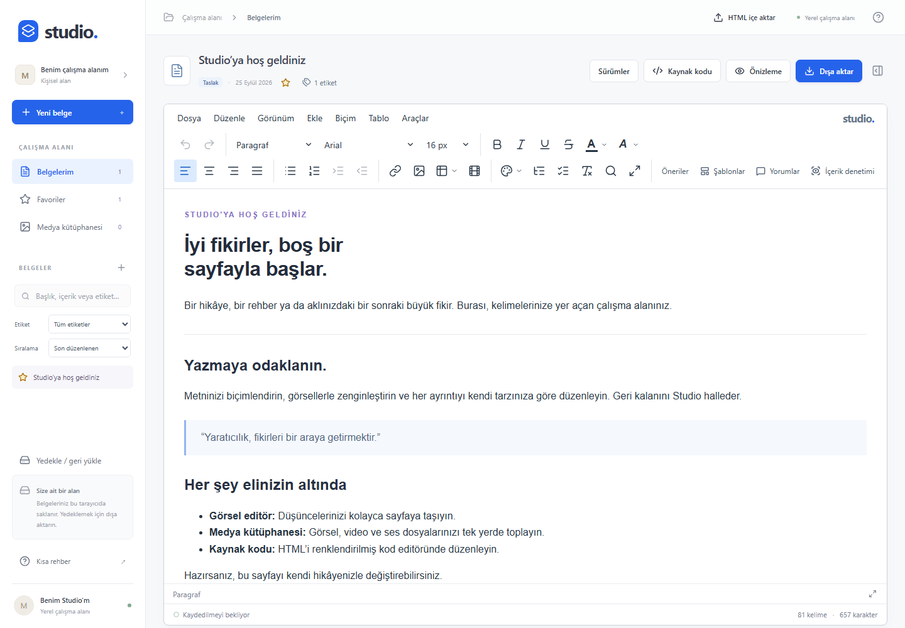

Akıcı bir yazma deneyimi
Başlıklar, görev listeleri, slash komutları ve Markdown kısayolları. Canlı başlık gezginiyle uzun belgelerde yolunuzu bulun.
/ komutları · @ bahsetmelerBir fikirden son taslağa. Yazın, biçimlendirin, görsellerle anlatın. Studio, tarayıcıda çalışan yazma alanınız ve projenize ekleyebileceğiniz Vue editörünüz.
Hesap gerekmez. Belgeleriniz bu tarayıcıda saklanır.

Günlük notlardan ayrıntılı içeriklere, aynı çalışma alanında.
Başlıklar, görev listeleri, slash komutları ve Markdown kısayolları. Canlı başlık gezginiyle uzun belgelerde yolunuzu bulun.
/ komutları · @ bahsetmelerÇoklu hücre seçimi, birleştirme, sütun boyutlandırma ve toplu biçimlendirme. Excel ve Sheets’ten tablo yapıştırın.
Hücre biçimleri · TSV yapıştırmaMedya kütüphanesinden ekleyin; görseli kırpın, döndürün ve rengini ayarlayın. Video, ses ve PDF dosyalarını da kullanın.
Yerleşik görsel düzenlemeFavoriler, etiketler ve içerikte arama. Otomatik kayıt, kalıcı sürümler ve tam çalışma alanı yedeğiyle devam edin.
Yerel kayıt · Sürüm geçmişiMetne yorum ekleyin, yanıtlayın ve çözün. Seçili metin için düzenleme önerileri oluşturup kabul veya reddedin.
Belge içinde yorum ve önerilerHTML kaynak görünümünü açın, önizleyin ve dışa aktarın. DOCX çıktısı veya tarayıcıdan PDF yazdırma seçeneklerini kullanın.
HTML · DOCX · PDF yazdırmaBağımsız bir uygulama olarak çalıştırın veya Vue 3 bileşenini ürününüze ekleyin. HTML ve JSON API’leri, olaylar ve medya adaptörleriyle entegre edin.
Vue bileşeni belgelerigit clone https://github.com/metinweb/studio-editor.git
cd studio-editor
npm ci
npm run devStudio Editor gelişmeye devam eden bir beta. Bir hata bildirimi, bir iyileştirme veya iyi bir fikirle katkıda bulunabilirsiniz.
Canlı iş birliği deneysel aşamadadır. Tam otomatik değişiklik izleme ve DOCX içe aktarma henüz desteklenmez. Demo belgeleri sunucuya kaydetmez; tarayıcı verilerini temizlemeden önce yedek alın.